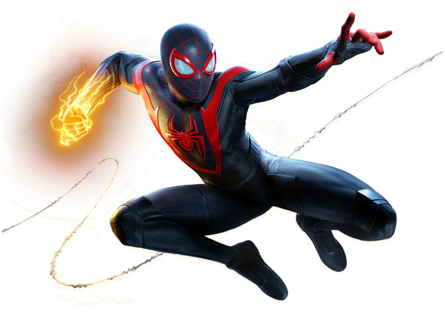

Miles Morales é o mais novo Homem-Aranha de Nova York da Marvel. Após a morte prematura de seu pai, Miles foi apresentado a Peter Parker, que rapidamente se tornou seu amigo e mentor. Quando Miles foi picado por uma aranha geneticamente modificada da Oscorp, ele desenvolveu poderes únicos e, após meses de insistência, Peter concordou em treiná-lo.
Comprar Ingresso